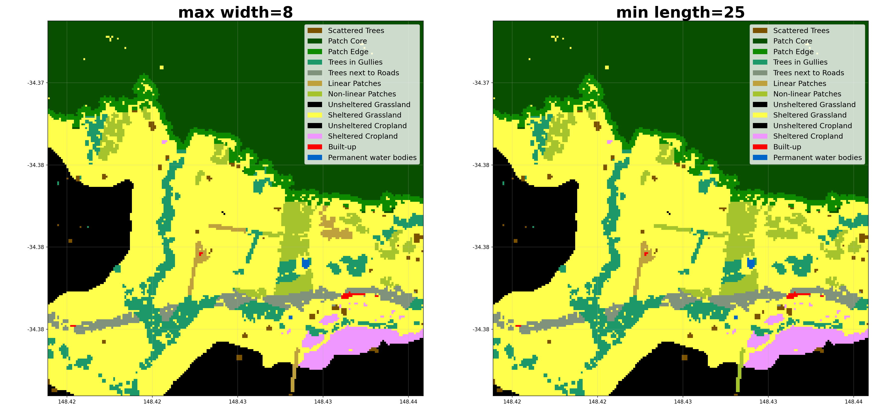
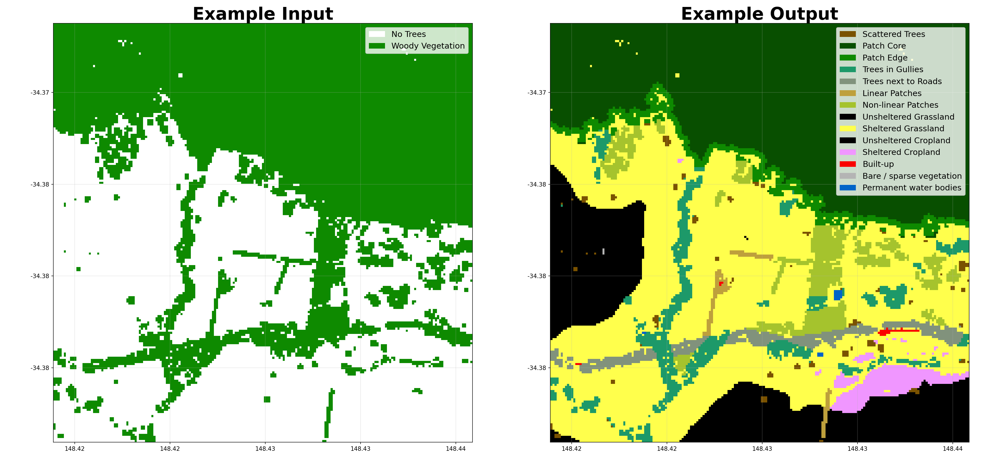
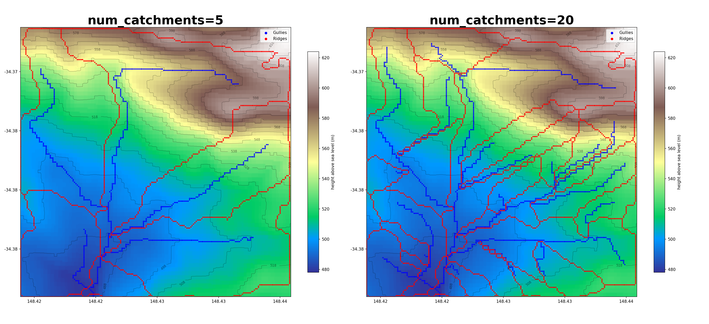
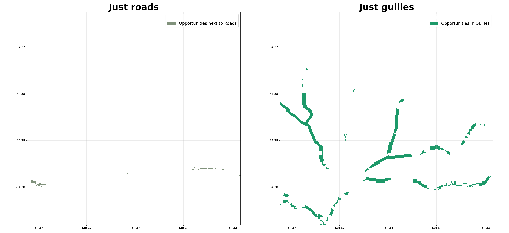
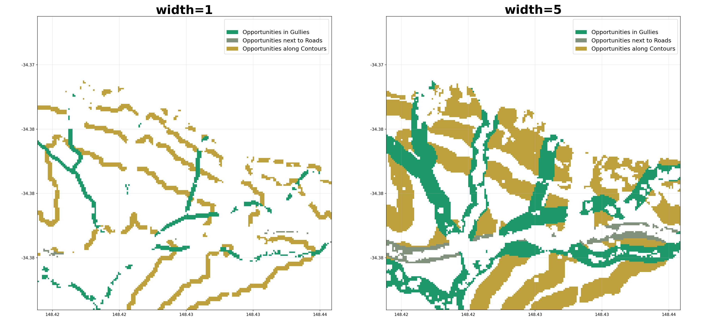
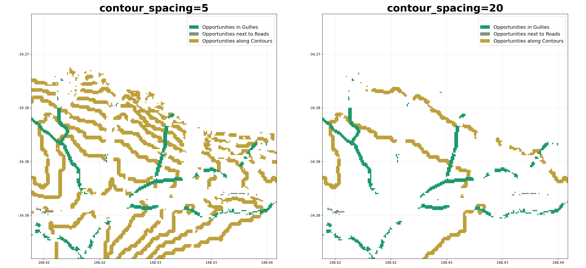
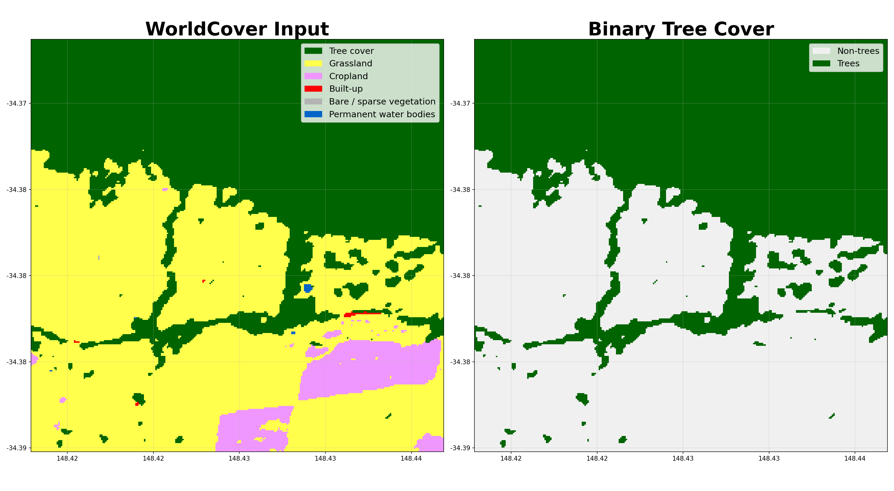
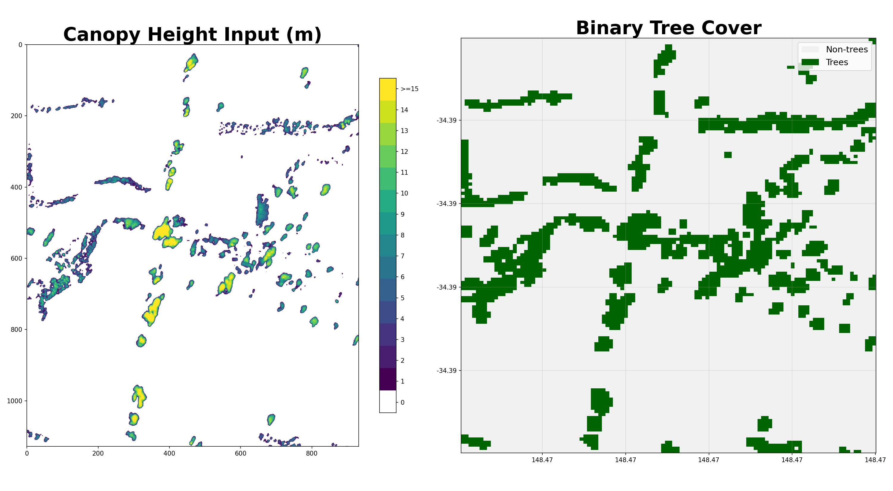

API Reference¶
WorldCover¶
- shelterbelts.apis.worldcover.worldcover(lat=-34.389, lon=148.469, buffer=0.01, outdir='.', stub='TEST', save_tif=True, plot=True)¶
Download ESA WorldCover imagery from the Microsoft Planetary Computer API.
- Parameters:
lat (float, optional) – Latitude in WGS 84 (EPSG:4326).
lon (float, optional) – Longitude in WGS 84 (EPSG:4326).
buffer (float, optional) – Distance in degrees in a single direction (0.01 ≈ 1 km), resulting in an approximately square area of size 2*buffer.
outdir (str, optional) – Output directory for saving results.
stub (str, optional) – Prefix for output filenames.
save_tif (bool, optional) – Whether to save the results as a GeoTIFF.
plot (bool, optional) – Whether to generate a PNG visualisation.
- Returns:
Dataset with variable worldcover (integer codes) and latitude/longitude coordinates. The mapping of codes to classes is provided in worldcover_labels.
- Return type:
xarray.Dataset
Notes
When save_tif=True, it writes: {stub}_worldcover.tif
When plot=True, it writes: {stub}_worldcover.png
Examples
Download a small tile without saving files:
>>> ds = worldcover(buffer=0.01, save_tif=False, plot=False) Starting worldcover.py >>> 'worldcover' in ds.data_vars True
Visualising the WorldCover output:

BARRA Daily¶
- shelterbelts.apis.barra_daily.barra_daily(variables=['uas', 'vas'], lat=-34.389, lon=148.469, buffer=0.01, start_year='2020', end_year='2021', outdir='.', stub='TEST', save_netcdf=True, plot=True, gdata=False, temporal='day')¶
Download 8day variables from BARRA at 4.4km resolution for the region and time of interest
- Parameters:
variables (list of str, optional) – Wind variables to download. See links at the top of this file for more details.
lat (float, optional) – Latitude in WGS 84 (EPSG:4326).
lon (float, optional) – Longitude in WGS 84 (EPSG:4326).
buffer (float, optional) – – Note: Buffer option is currently disabled due to a bug in the API, so we just get the nearest point.
start_year (str, optional) – Start year (inclusive). The minimum available year is 1889.
end_year (str, optional) – End year (inclusive). Data beyond the available range will be capped at the most recent available date.
outdir (str, optional) – Output directory for saving results.
stub (str, optional) – Prefix for output filenames.
save_netcdf (bool, optional) – Whether to save results as a NetCDF file.
plot (bool, optional) – Whether to generate a wind rose visualisation (PNG).
gdata (bool, optional) – Whether to access data via NCI /g/data/xe2 path (requires NCI access). If False, uses public THREDDS server.
temporal (str, optional) – Temporal resolution of the data. Options are ‘20min’, ‘1hr’, ‘day’, ‘mon’.
- Returns:
Dataset containing the requested variables with dimensions for time, latitude, and longitude.
- Return type:
xarray.Dataset
Notes
When save_netcdf=True, it writes: {stub}_barra_daily.nc
When plot=True, it writes: {stub}_barra_daily.png (a wind rose visualisation)
Examples
Download wind data with default parameters:
>>> ds = barra_daily(save_netcdf=False, plot=False) >>> 'uas' in ds.data_vars and 'vas' in ds.data_vars # Eastward and northward wind speed True
Visualising the wind rose:

Canopy Height¶
- shelterbelts.apis.canopy_height.canopy_height(lat=-34.389, lon=148.469, buffer=0.005, outdir='.', stub='Test', tmpdir='.', save_tif=True, plot=True)¶
Download and create a merged canopy height raster from the Meta/Tolan dataset.
- Parameters:
lat (float, optional) – Latitude in WGS 84 (EPSG:4326).
lon (float, optional) – Longitude in WGS 84 (EPSG:4326).
buffer (float, optional) – Distance in degrees in a single direction. e.g. 0.01 degrees is ~1km so a buffer of 0.01 gives an approx 2km x 2km area.
outdir (str, optional) – Output directory for saving results.
stub (str, optional) – Prefix for output filenames.
tmpdir (str, optional) – Directory to cache downloaded tiles.
save_tif (bool, optional) – Whether to save the results as a GeoTIFF.
plot (bool, optional) – Whether to generate a PNG visualisation.
- Returns:
Dataset with coordinates (latitude, longitude) and variable (canopy_height) of type int in metres.
- Return type:
xarray.Dataset
Notes
When save_tif=True, it writes: {stub}_canopy_height.tif
When plot=True, it writes: {stub}_canopy_height.png
Example Visualisation¶

Indices¶
Tree Categories¶
- shelterbelts.indices.tree_categories.tree_categories(input_data, outdir='.', stub=None, min_patch_size=20, min_core_size=1000, edge_size=3, max_gap_size=1, strict_core_area=True, save_tif=True, plot=True)¶
Classifies a boolean woody vegetation map into four categories based on the Fragstats landscape ecology approach:
Scattered Trees (11): Individual trees or clusters below minimum patch size
Patch Core (12): Interior areas of tree patches with buffer from edges
Patch Edge (13): Perimeter areas of tree patches within edge distance
Other Trees (14): Corridor pixels connecting patches
- Parameters:
input_data (str or xarray.Dataset) – Either a file path to a binary GeoTIFF containing tree/no-tree information, or an xarray Dataset with a ‘woody_veg’ band (boolean or integer).
outdir (str, optional) – Output directory for saving results.
stub (str, optional) – Prefix for output filenames. If not provided it is derived from input_data.
min_patch_size (int, optional) – Minimum area (pixels) to classify as a patch rather than scattered trees.
min_core_size (int, optional) – Minimum area (pixels) to classify as a core area.
edge_size (int, optional) – Distance (pixels) defining the edge region around patch cores.
max_gap_size (int, optional) – Maximum gap (pixels) to bridge when connecting tree clusters.
strict_core_area (bool, optional) – If True, enforce that core areas exceed the edge_size at all points. If False, use dilation and erosion to allow some irregularity.
save_tif (bool, optional) – Whether to save the results as a GeoTIFF.
plot (bool, optional) – Whether to generate a PNG visualisation.
- Returns:
Dataset containing:
woody_veg: Original binary tree/no-tree classification
tree_categories: Categorised tree types (values 0, 11, 12, 13, 14)
- Return type:
xarray.Dataset
Notes
When save_tif=True, it outputs a GeoTIFF file with embedded color map: {stub}_tree_categories.tif
When plot=True, it outputs a PNG visualisation with legend: {stub}_tree_categories.png
References
McGarigal, K., & Marks, B. J. (1995). FRAGSTATS: Spatial Pattern Analysis Program for Quantifying Landscape Structure. General Technical Report.
Examples
Using a file path as input:
>>> from shelterbelts.utils.filepaths import get_filename >>> filename_string = get_filename('g2_26729_binary_tree_cover_10m.tiff') >>> ds_cat = tree_categories(filename_string, plot=False, save_tif=False) >>> set(ds_cat.data_vars) == {'woody_veg', 'tree_categories'} True
Using a Dataset as input:
>>> from shelterbelts.utils.filepaths import create_test_woody_veg_dataset >>> ds_input = create_test_woody_veg_dataset() >>> ds_cat = tree_categories(ds_input, stub="TEST", plot=False, save_tif=False) >>> set(ds_cat.data_vars) == {'woody_veg', 'tree_categories'} True
Here’s how different parameters affect the categorization:


Shelter Categories¶
- shelterbelts.indices.shelter_categories.shelter_categories(category_data, wind_data=None, height_tif=None, outdir='.', stub='TEST', wind_method='WINDWARD', wind_threshold=20, distance_threshold=20, density_threshold=5, savetif=True, plot=True, crop_pixels=None)¶
Define sheltered and unsheltered pixels
Unsheltered (0): Pixels not protected from wind or without sufficient tree cover
Sheltered (2): Pixels within sheltering distance of trees or with sufficient tree cover
- Parameters:
category_data (str or xarray.Dataset) – Integer tif file generated by tree_categories.py, or a Dataset containing the ‘tree_categories’ band.
wind_data (str or xarray.Dataset, optional) – NetCDF with eastward and northward wind speed generated by barra_daily.py. If not provided, then sheltered/unsheltered is defined by nearby tree density rather than distance from trees.
height_tif (str, optional) – Integer tif file generated by canopy_height.py. If not provided, then sheltered/unsheltered is defined by distance in pixels rather than tree heights.
outdir (str, optional) – Output directory for saving results.
stub (str, optional) – Prefix for output filenames.
wind_method (str, optional) – Either ‘WINDWARD’, ‘MOST_COMMON’, ‘MAX’, ‘HAPPENED’, ‘ANY’, or ‘MULTI_LAYER’. MOST_COMMON assumes only downwind shelter, using the most common wind direction above the wind_threshold. WINDWARD assumes downwind shelter to distance_threshold, and upwind shelter to (distance_threshold / 2). MAX assumes shelter from the direction of maximum wind speed. HAPPENED refers to any direction where the winds exceeded the wind_threshold in the wind dataset. ANY refers to all 8 compass directions. MULTI_LAYER saves an 8-band GeoTIFF (bands in clockwise order: N, NE, E, SE, S, SW, W, NW). Does not require wind_data.
wind_threshold (int, optional) – Wind speed threshold in km/h.
distance_threshold (int, optional) – Distance from trees that counts as sheltered. Units are either ‘tree heights’ or ‘number of pixels’, depending on if a height_tif is provided.
density_threshold (int, optional) – Percentage tree cover within the distance_threshold that counts as sheltered. Only applies if the wind_data is not provided.
savetif (bool, optional) – Whether to save the results as a GeoTIFF.
plot (bool, optional) – Whether to generate a PNG visualisation.
crop_pixels (int, optional) – Number of pixels to crop from each edge of the output.
- Returns:
Dataset containing ‘shelter_categories’ band, where the integers represent the categories defined in ‘shelter_category_labels’.
- Return type:
xarray.Dataset
Notes
When savetif=True, it outputs a GeoTIFF file with embedded color map: {stub}_shelter_categories.tif
When plot=True, it outputs a PNG visualisation with legend: {stub}_shelter_categories.png
Examples
Using a file path as input:
>>> from shelterbelts.utils.filepaths import get_filename >>> filename = get_filename('g2_26729_tree_categories.tif') >>> ds_shelter = shelter_categories(filename, outdir='/tmp', plot=False, savetif=False) >>> set(ds_shelter.data_vars) == {'tree_categories', 'shelter_categories'} # No woody_veg layer because we loaded the tree_categories.tif directly True
Using a Dataset as input:
>>> from shelterbelts.utils.filepaths import get_example_tree_categories_data >>> ds_cat = get_example_tree_categories_data() >>> ds_shelter = shelter_categories(ds_cat, outdir='/tmp', plot=False, savetif=False) >>> set(ds_shelter.data_vars) == {'woody_veg', 'tree_categories', 'shelter_categories'} # Includes woody_veg layer because the full pipeline was executed True
Here’s how different parameters affect the shelter categorization:


Cover Categories¶
- shelterbelts.indices.cover_categories.cover_categories(shelter_data, worldcover_data, outdir='.', stub='TEST', savetif=True, plot=True)¶
Reclassify non-tree pixels with categories from worldcover
- Parameters:
shelter_data (str, xarray.Dataset, or xarray.DataArray) – File path to integer tif generated by shelter_categories.py, or a Dataset/DataArray containing the ‘shelter_categories’ band.
worldcover_data (str or xarray.DataArray) – File path to integer tif generated by apis.worldcover.py, or a DataArray.
outdir (str, optional) – Output directory for saving results.
stub (str, optional) – Prefix for output filenames.
savetif (bool, optional) – Whether to save the results as a GeoTIFF.
plot (bool, optional) – Whether to generate a PNG visualisation.
- Returns:
Dataset containing ‘cover_categories’ band, where the integers represent the categories defined in ‘cover_categories_labels’.
- Return type:
xarray.Dataset
Notes
When savetif=True, it outputs a GeoTIFF file with embedded color map: {stub}_cover_categories.tif
When plot=True, it outputs a PNG visualisation with legend: {stub}_cover_categories.png
Examples
Using file paths as input:
>>> from shelterbelts.utils.filepaths import get_filename >>> shelter_file = get_filename('g2_26729_shelter_categories.tif') >>> worldcover_file = get_filename('g2_26729_worldcover.tif') >>> ds_cover = cover_categories(shelter_file, worldcover_file, outdir='/tmp', plot=False, savetif=False) >>> 'cover_categories' in set(ds_cover.data_vars) True
Using datasets as input:
>>> import rioxarray as rxr >>> da_shelter = rxr.open_rasterio(shelter_file).squeeze('band').drop_vars('band') >>> da_worldcover = rxr.open_rasterio(worldcover_file).squeeze('band').drop_vars('band') >>> ds_cover = cover_categories(da_shelter, da_worldcover, outdir='/tmp', plot=False, savetif=False) >>> set(ds_cover.coords) == {'x', 'y', 'spatial_ref'} True
Visualising the cover categories:

Buffer Categories¶
- shelterbelts.indices.buffer_categories.buffer_categories(cover_data, gullies_data, ridges_data=None, roads_data=None, outdir='.', stub='TEST', buffer_width=3, savetif=True, plot=True)¶
Reclassify relevant corridors as riparian buffers and ridge buffers.
- Parameters:
cover_data (str, xarray.Dataset, or xarray.DataArray) – Integer tif file generated by cover_categories.py.
gullies_data (str, xarray.Dataset, or xarray.DataArray) – Boolean tif file generated by either hydrolines.py or catchments.py.
ridges_data (str, xarray.Dataset, or xarray.DataArray, optional) – Boolean tif file generated by catchments.py.
roads_data (str, xarray.Dataset, or xarray.DataArray, optional) – Boolean tif file generated by osm.py or hydrolines.py.
outdir (str, optional) – Output directory for saving results.
stub (str, optional) – Prefix for output filenames.
buffer_width (int, optional) – Number of pixels away from the feature that still counts as within the buffer.
savetif (bool, optional) – Whether to save the results as a GeoTIFF.
plot (bool, optional) – Whether to generate a PNG visualisation.
- Returns:
Dataset with ‘buffer_categories’ band, where integers represent categories defined in ‘buffer_categories_labels’.
- Return type:
xarray.Dataset
Notes
When savetif=True, it outputs a GeoTIFF file with embedded color map: {stub}_buffer_categories.tif
When plot=True, it outputs a PNG visualisation with legend: {stub}_buffer_categories.png
Examples
Using file paths as input:
>>> from shelterbelts.utils.filepaths import get_filename >>> cover_file = get_filename('g2_26729_cover_categories.tif') >>> gullies_file = get_filename('g2_26729_DEM-S_gullies.tif') >>> ds = buffer_categories(cover_file, gullies_file, outdir='/tmp', plot=False, savetif=False) >>> 'buffer_categories' in set(ds.data_vars) True
Using Datasets as input:
>>> import rioxarray as rxr >>> da_cover = rxr.open_rasterio(cover_file).squeeze('band').drop_vars('band') >>> ds_cover = da_cover.to_dataset(name='cover_categories') >>> da_gullies = rxr.open_rasterio(gullies_file).squeeze('band').drop_vars('band') >>> ds_gullies = da_gullies.to_dataset(name='gullies') >>> ds = buffer_categories(ds_cover, ds_gullies, outdir='/tmp', plot=False, savetif=False) >>> 'buffer_categories' in set(ds.data_vars) True
Here’s how different parameters affect the buffer categorization:


Shelter Metrics¶
Patch Metrics¶
- shelterbelts.indices.shelter_metrics.patch_metrics(buffer_data, outdir='.', stub='TEST', plot=True, save_csv=True, save_tif=True, save_labels=True, min_shelterbelt_length=15, max_shelterbelt_width=6, min_patch_size=20, crop_pixels=None)¶
Calculate patch metrics and cleanup the tree pixel categories.
- Parameters:
buffer_data (str, xarray.Dataset, or xarray.DataArray) – Integer tif file generated by buffer_categories.py.
outdir (str, optional) – Output directory for saving results.
stub (str, optional) – Prefix for output filenames.
plot (bool, optional) – Whether to generate a PNG visualisation.
save_csv (bool, optional) – Whether to save patch_metrics.csv with cluster statistics.
save_tif (bool, optional) – Whether to save linear_categories.tif output.
save_labels (bool, optional) – Whether to save label-related tif files (assigned_labels, ellipse_outline_raster, shortest_path_raster, perpendicular_raster, widths_raster).
min_shelterbelt_length (int, optional) – Minimum skeleton length (in pixels) to classify a cluster as linear.
max_shelterbelt_width (int, optional) – Maximum skeleton width (in pixels) to classify a cluster as linear.
min_patch_size (int, optional) – Clusters smaller than this are merged into nearby larger clusters.
crop_pixels (int, optional) – Number of pixels to crop from each edge of the output. Pass None to skip cropping.
- Returns:
ds (xarray.DataSet) – with linear_categories and labelled_categories.
df (pandas.DataFrame) – Individual attributes for each cluster.
Notes
Downloads the following files (depending on parameters):
patch_metrics.csv: Cluster statistics for each patch
linear_categories.tif: Reclassified categories (linear=18, non-linear=19) after majority filtering (dtype uint8)
linear_categories.png: Visualisation with legend
assigned_labels.tif: Unique integer ID for each cluster (dtype int32)
ellipse_outline_raster.tif: Ellipse boundary for each cluster
shortest_path_raster.tif: Skeleton path along each cluster
perpendicular_raster.tif: Perpendicular width measurements
widths_raster.tif: Width values at each skeleton pixel
labelled_categories.tif: Unique integer ID for each cluster (dtype int32); view in QGIS with Paletted/Unique Values
labelled_categories.png: Cluster IDs with ellipse overlays
Examples
Using file paths as input:
>>> from shelterbelts.utils.filepaths import get_filename >>> buffer_file = get_filename('g2_26729_buffer_categories.tif') >>> ds, df = patch_metrics(buffer_file, outdir='/tmp', stub='test', plot=False, save_csv=False, save_tif=False) >>> 'linear_categories' in set(ds.data_vars) True
Using Datasets as input:
>>> import rioxarray as rxr >>> da = rxr.open_rasterio(buffer_file).squeeze('band').drop_vars('band') >>> ds_buffer = da.to_dataset(name='buffer_categories') >>> ds, df = patch_metrics(ds_buffer, outdir='/tmp', stub='test', plot=False, save_csv=False, save_tif=False) >>> 'linear_categories' in set(ds.data_vars) True
Here’s an example of how different parameters affect the linear categorization:

Class Metrics¶
- shelterbelts.indices.shelter_metrics.class_metrics(buffer_data, outdir='.', stub='TEST', save_excel=True)¶
Calculate the percentage cover in each class.
- Parameters:
buffer_data (str, xarray.Dataset, or xarray.DataArray) – A tif file, Dataset, or DataArray where the integers represent the categories defined in ‘linear_categories_labels’.
outdir (str, optional) – The output directory to save results.
stub (str, optional) – Prefix for output file names.
save_excel (bool, optional) – Whether to save the results as an Excel file with multiple sheets.
- Returns:
A dictionary with the following pandas DataFrames:
Overall: Count and percentage for each category
Landcover: Aggregated statistics by landcover group (Trees, Grassland, Cropland, Built-up, Water)
Trees: Breakdown of tree categories as percentage of total tree coverage
Shelter: Percentage of grassland and cropland that are sheltered vs unsheltered
- Return type:
dict
Examples
Using file paths as input:
>>> from shelterbelts.utils.filepaths import get_filename >>> linear_file = get_filename('g2_26729_linear_categories.tif') >>> dfs = class_metrics(linear_file, outdir='/tmp', stub='test', save_excel=False) >>> len(dfs) == 4 True
Using linear categories from a Dataset:
>>> import rioxarray as rxr >>> da = rxr.open_rasterio(linear_file).squeeze('band').drop_vars('band') >>> ds_linear = da.to_dataset(name='linear_categories') >>> dfs = class_metrics(ds_linear, outdir='/tmp', stub='test', save_excel=False) >>> 'Shelter' in dfs True
Downloads¶
class_metrics.xlsx: An excel file with each dataframe in a separate tab.
Full Indices Pipeline¶
Run the end-to-end indices pipeline on a single, or multiple percent-cover rasters.
- shelterbelts.indices.all_indices.indices_tif(percent_tif, outdir='.', tmpdir='.', stub=None, wind_method=None, wind_threshold=20, cover_threshold=1, min_patch_size=20, edge_size=3, max_gap_size=1, distance_threshold=20, density_threshold=5, buffer_width=3, strict_core_area=True, crop_pixels=0, min_core_size=1000, min_shelterbelt_length=15, max_shelterbelt_width=6, debug=False)¶
Run the complete indices pipeline for a single percent-cover GeoTIFF.
- Parameters:
percent_tif (str) – Path to the input percent-cover GeoTIFF (one-band, percent tree cover).
outdir (str, optional) – Output directory for saving results (default is in utils.filepaths).
tmpdir (str, optional) – Directory for temporary files (default is in utils.filepaths).
stub (str, optional) – Prefix for output filenames. If not provided it is derived from percent_tif.
wind_method (str or None, optional) – Method used to infer shelter direction. Can be None, ‘WINDWARD’, ‘MOST_COMMON’, ‘MAX’, ‘HAPPENED’ or ‘ANY’. See
shelter_categories()for details.wind_threshold (int, optional) – Wind speed threshold in km/h.
cover_threshold (int, optional) – Pixel percent cover threshold to treat a pixel as ‘tree’. - If input is a binary tif use cover_threshold=1. - For percent-cover tifs typical values are 10 or 20. - For confidence tifs a value like 50 is reasonable.
min_patch_size (int, optional) – Minimum area (pixels) to classify as a patch rather than scattered trees.
edge_size (int, optional) – Distance (pixels) defining the edge region around patch cores.
max_gap_size (int, optional) – Maximum gap (pixels) to bridge when connecting tree clusters.
distance_threshold (int, optional) – Distance from trees that counts as sheltered. Units are either ‘tree heights’ or ‘number of pixels’, depending on if a height_tif is provided.
density_threshold (int, optional) – Percentage tree cover within the distance_threshold that counts as sheltered. Only applies if the wind_data is not provided.
buffer_width (int, optional) – Number of pixels away from the feature that still counts as within the buffer.
strict_core_area (bool, optional) – If True, enforce that core areas exceed the edge_size at all points. If False, use dilation and erosion to allow some irregularity.
crop_pixels (int, optional) – Number of pixels to crop from each edge of the output.
min_core_size (int, optional) – Minimum area (pixels) to classify as a core area.
min_shelterbelt_length (int, optional) – Minimum skeleton length (in pixels) to classify a cluster as linear.
max_shelterbelt_width (int, optional) – Maximum skeleton width (in pixels) to classify a cluster as linear.
debug (bool, optional) – If True, intermediate TIFFs/plots are saved for debugging.
- Returns:
ds (xarray.Dataset) – Dataset with linear_categories and labelled_categories bands.
df (pandas.DataFrame) – Per-cluster patch metrics (skeleton length/width, category, etc.).
Examples

- shelterbelts.indices.all_indices.indices_csv(csv, outdir='.', tmpdir='.', stub=None, wind_method=None, wind_threshold=20, cover_threshold=1, min_patch_size=20, edge_size=3, max_gap_size=1, distance_threshold=20, density_threshold=5, buffer_width=3, strict_core_area=True, crop_pixels=0, min_core_size=1000, min_shelterbelt_length=15, max_shelterbelt_width=6)¶
Run the indices pipeline for every file listed in a CSV.
The CSV is expected to contain a column named filename with full paths to percent-cover GeoTIFFs. Each row is processed sequentially by indices_tif using the provided parameters.
- Parameters:
csv (str) – Path to a CSV file containing a filename column with input TIFF paths.
parameters (Other) – Passed through to
indices_tif()(see that function for details).
- shelterbelts.indices.all_indices.indices_tifs(folder, outdir='.', tmpdir='.', param_stub='', wind_method=None, wind_threshold=20, cover_threshold=1, min_patch_size=20, edge_size=3, max_gap_size=1, distance_threshold=20, density_threshold=5, buffer_width=3, strict_core_area=True, crop_pixels=0, limit=None, tiles_per_csv=100, min_core_size=1000, min_shelterbelt_length=15, max_shelterbelt_width=6, suffix='tif')¶
Run the indices pipeline over a folder of binary or integer tifs representing percentage tree cover.
- Parameters:
folder (str) – Input directory containing binary or integer TIFFs.
outdir (str, optional) – Output directory for generated linear/category TIFFs.
tmpdir (str, optional) – Directory used for temporary CSVs and intermediate files.
param_stub (str, optional) – Extra stub for csv filenames and downstream tifs.
tiles_per_csv (int, optional) – Number of tiles grouped per subprocess CSV.
parameters (Other) – Passed through to
indices_tif()(see that function for details).
- shelterbelts.indices.all_indices.indices_latlon(lat, lon, buffer=0.05, outdir='.', tmpdir='.', stub=None, wind_method=None, wind_threshold=20, height_threshold=1.0, cover_threshold=1, min_patch_size=20, edge_size=3, max_gap_size=1, distance_threshold=20, density_threshold=5, buffer_width=3, strict_core_area=True, crop_pixels=0, min_core_size=1000, min_shelterbelt_length=15, max_shelterbelt_width=6, debug=False)¶
Run the complete indices pipeline for a lat/lon location, auto-downloading all required data.
Downloads canopy height (Meta/Tolan global CHM), ESA WorldCover, terrain tiles for gully/ridge delineation, and OpenStreetMap roads. BARRA wind data is only downloaded when wind_method is set.
- Parameters:
lat (float) – Latitude in WGS 84 (EPSG:4326).
lon (float) – Longitude in WGS 84 (EPSG:4326).
buffer (float, optional) – Half-width of the region of interest in degrees (~5 km at 0.05).
outdir (str, optional) – Output directory for saving results.
tmpdir (str, optional) – Directory for temporary/cached files.
stub (str, optional) – Prefix for output filenames. Defaults to “{lat:.3f}_{lon:.3f}”.
wind_method (str or None, optional) – Method used to infer shelter direction. See
indices_tif()for options.wind_threshold (int, optional) – Wind speed threshold in km/h.
height_threshold (float, optional) – Canopy height (metres) above which a 1 m pixel is classified as tree.
cover_threshold (int, optional) – Minimum percentage of tree-pixels within a 10 m cell to count it as tree. The 1 m binary raster is average-resampled to 10 m (giving 0–100 % cover) before this threshold is applied, matching the behaviour of
indices_tif().min_patch_size (optional) – Same as
indices_tif().edge_size (optional) – Same as
indices_tif().max_gap_size (optional) – Same as
indices_tif().distance_threshold (optional) – Same as
indices_tif().density_threshold (optional) – Same as
indices_tif().buffer_width (optional) – Same as
indices_tif().strict_core_area (optional) – Same as
indices_tif().crop_pixels (optional) – Same as
indices_tif().min_core_size (optional) – Same as
indices_tif().min_shelterbelt_length (optional) – Same as
indices_tif().max_shelterbelt_width (optional) – Same as
indices_tif().debug (optional) – Same as
indices_tif().
- Returns:
ds (xarray.Dataset) – Dataset with linear_categories and labelled_categories bands.
df (pandas.DataFrame) – Per-cluster patch metrics.
Notes
For locations in Australia, higher-quality roads and hydrolines are available from the Geoscience NationalRoads GDB and SurfaceHydrologyLinesRegional GDB. Set shelterbelts.utils.filepaths.roads_gdb and hydrolines_gdb to use them.
Catchments¶
- shelterbelts.indices.catchments.catchments(terrain_tif, outdir='.', stub='TEST', tmpdir='.', num_catchments=10, savetif=True, plot=True)¶
Generate gully and ridge tifs from a digital elevation model.
- Parameters:
terrain_tif (str) – Path to the DEM (Digital Elevation Model) GeoTIFF file.
outdir (str, optional) – Output directory for saving results.
stub (str, optional) – Prefix for output filenames.
tmpdir (str, optional) – Temporary folder to save the terrain_tif as float64 for pysheds.
num_catchments (int, optional) – The number of catchments to find when assigning gullies and ridges.
savetif (bool, optional) – Whether to save the results as a GeoTIFF.
plot (bool, optional) – Whether to generate a PNG visualisation.
- Returns:
Dataset containing:
terrain: The input DEM (float)
gullies: Boolean array of gullies
ridges: Boolean array of catchment boundaries
- Return type:
xarray.Dataset
Notes
When savetif=True, it writes:
{stub}_gullies.tif
{stub}_ridges.tif
When plot=True, it writes: {stub}_gullies_and_ridges.png
Examples

Opportunities¶
- shelterbelts.indices.opportunities.opportunities(percent_tif, roads_data=None, gullies_data=None, ridges_data=None, worldcover_data=None, dem_data=None, outdir='.', stub=None, tmpdir='.', cover_threshold=1, width=1, ridges=False, num_catchments=10, min_branch_length=10, contour_spacing=10, min_contour_length=100, equal_area=False, savetif=True, plot=False, crop_pixels=0)¶
Suggest opportunities for new trees based on ridges, gullies and contours.
Loads a percent-cover GeoTIFF, derives gullies (from hydrolines or DEM catchments), roads, ridges and contours, then delegates to
opportunities_da()to classify grass/crop pixels near those features as planting opportunities.- Parameters:
percent_tif (str) – Path to a percent-cover GeoTIFF. A binary tif also works with the default cover_threshold of 1.
roads_data (str or xarray.DataArray, optional) – Pre-loaded binary roads raster or path to a GeoTIFF. When None the roads are derived from the bounding box of percent_tif.
gullies_data (str or xarray.DataArray, optional) – Pre-loaded binary gullies raster or path to a GeoTIFF. When None the gullies are derived from hydrolines or DEM catchments.
ridges_data (str or xarray.DataArray, optional) – Pre-loaded binary ridges raster or path to a GeoTIFF. When None and ridges=True, ridges are derived from DEM catchments.
worldcover_data (str or xarray.DataArray, optional) – Pre-loaded WorldCover land-cover raster or path to a GeoTIFF. When None the WorldCover data is derived from the bounding box.
dem_data (str or xarray.DataArray, optional) – Pre-loaded DEM raster or path to a GeoTIFF. When None the DEM is derived from the bounding box.
outdir (str, optional) – Output directory for saving results.
stub (str, optional) – Prefix for output filenames. If not provided it is derived from percent_tif.
tmpdir (str, optional) – Directory for temporary files.
cover_threshold (int, optional) – Pixel percent cover threshold to treat a pixel as ‘tree’.
width (int, optional) – Number of pixels away from the feature that still counts as within the buffer.
ridges (bool, optional) – Whether to include opportunities for trees on catchment boundaries (ridges). If False, hydrolines are used for gullies only. If True, the DEM is used for both gullies and ridges.
num_catchments (int, optional) – Number of catchments when calculating ridges and gullies. If None, the number of hydroline segments is used instead.
min_branch_length (int, optional) – Smallest allowable branch when using hydrolines to determine number of catchments.
contour_spacing (int, optional) – Number of pixels between each contour. If equal_area is True, this is used as the number of contours instead. Set to 0 to disable contour opportunities.
min_contour_length (int, optional) – Smallest allowable contour to use as an opportunity for planting trees.
equal_area (bool, optional) – Whether to generate a given number of contours per tile (True), or place contours at the same elevations across all tiles (False).
savetif (bool, optional) – Whether to save the results as a GeoTIFF.
plot (bool, optional) – Whether to generate a visualisation.
crop_pixels (int, optional) – Number of pixels to crop from each edge of the output.
- Returns:
Dataset containing:
woody_veg: Original binary tree/no-tree classification
opportunities: Opportunity categories (values 0, 5, 6, 7, 8)
- Return type:
xarray.Dataset
Notes
When savetif=True, it outputs a GeoTIFF file with embedded color map: {stub}_opportunities.tif
Examples
Using file paths as input:
>>> from shelterbelts.utils.filepaths import get_filename >>> tree_file = get_filename('g2_26729_binary_tree_cover_10m.tiff') >>> roads_file = get_filename('g2_26729_roads.tif') >>> gullies_file = get_filename('g2_26729_hydrolines.tif') >>> dem_file = get_filename('g2_26729_DEM-H.tif') >>> worldcover_file = get_filename('g2_26729_worldcover.tif') >>> ds = opportunities(tree_file, roads_data=roads_file, gullies_data=gullies_file, dem_data=dem_file, worldcover_data=worldcover_file, outdir='/tmp', plot=False, savetif=False) >>> set(ds.data_vars) == {'woody_veg', 'opportunities'} True



Classifications¶
Tools for turning raw remote-sensing inputs into the binary tree-cover rasters that feed the indices pipeline.
Binary Tree Rasters¶
- shelterbelts.classifications.binary_trees.worldcover_trees(input_data, outdir='.', stub=None, savetif=True, plot=True)¶
Convert an ESA WorldCover classification tif into a binary tree-cover tif.
Pixels labelled as Tree cover (class 10) or Shrubland (class 20) in WorldCover are kept as trees (1) and everything else becomes non-tree (0). The output tif has the same resolution and CRS as the input and can be fed directly into
shelterbelts.indices.all_indices.indices_tif().- Parameters:
input_data (str or xarray.DataArray) – Either a file path to a WorldCover GeoTIFF, or a pre-loaded DataArray.
outdir (str, optional) – Output directory for saving results.
stub (str, optional) – Prefix for output filenames. By default it gets derived from the input_data filename.
savetif (bool, optional) – Whether to save the results as a GeoTIFF.
plot (bool, optional) – Whether to generate a PNG visualisation.
- Returns:
Dataset with a single woody_veg variable (uint8, 0/1).
- Return type:
xarray.Dataset
Examples
>>> from shelterbelts.utils.filepaths import get_filename >>> filename = get_filename('g2_26729_worldcover.tif') >>> ds = worldcover_trees(filename, savetif=False, plot=False) >>> 'woody_veg' in ds.data_vars True

- shelterbelts.classifications.binary_trees.canopy_height_trees(input_data, outdir='.', stub=None, savetif=True, plot=True)¶
Convert a 1m canopy-height tif into a binary 10m tree-cover tif.
Any pixel with canopy height ≥ 1m becomes a tree (1) and others become non-tree (0). Then uses ‘max’ resampling to coarsen to 10m resolution.
- Parameters:
input_data (str or xarray.DataArray) – Either a file path to a 1m canopy-height GeoTIFF, or a pre-loaded DataArray.
outdir (str, optional) – Output directory for the saved tif.
stub (str, optional) – Prefix for output filenames. By default it gets derived from the input_data filename.
savetif (bool, optional) – Whether to save the results as a GeoTIFF.
plot (bool, optional) – Whether to generate a PNG visualisation.
- Returns:
Dataset with a single woody_veg variable (uint8, 0/1).
- Return type:
xarray.Dataset
Examples
>>> from shelterbelts.utils.filepaths import get_filename >>> filename = get_filename('milgadara_1kmx1km_CHM_1m.tif') >>> ds = canopy_height_trees(filename, savetif=False, plot=False) >>> 'woody_veg' in ds.data_vars True

Bounding Boxes¶
- shelterbelts.classifications.bounding_boxes.bounding_boxes(folder, outdir=None, stub=None, size_threshold=80, tif_cover_threshold=None, remove=False, filetype='.tif', crs=None, save_centroids=False, limit=None, verbose=True)¶
Collect footprints for every GeoTIFF in a folder.
- Parameters:
folder (str) – Folder of tifs.
outdir (str, optional) – Output directory for saving results. Defaults to the same folder.
stub (str, optional) – Prefix for output filenames. By default it gets derived from the folder name.
size_threshold (int, optional) – Minimum acceptable tile side length in pixels.
tif_cover_threshold (int, optional) – Minimum percentage of tree (or non-tree) pixels required. When None the cover check is skipped.
remove (bool, optional) – Delete tifs that don’t meet the size or percent cover threshold.
filetype (str, optional) – Suffix matching the files to scan.
crs (str or pyproj.CRS, optional) – CRS for the output GeoPackage. If None, estimated from the middle tile in the folder.
save_centroids (bool, optional) – Also write a centroid GeoPackage (useful for very zoomed-out views).
limit (int, optional) – Only process a certain number of tifs. By default it processes all tifs.
verbose (bool, optional) – Print progress every 100 tifs.
- Returns:
One row per tif with columns: filename, height, width, crs, geometry plus pixels_0/pixels_1/percent_trees, bad_tif (boolean) when tif_cover_threshold is used.
- Return type:
geopandas.GeoDataFrame
Notes
Writes to disk:
{outdir}/{stub}_footprints.gpkg — one polygon per tile
{outdir}/{stub}_centroids.gpkg — one point per tile (only if save_centroids=True)
Examples
Collect footprints from the bundled folder of two binary tree tifs:
>>> gdf = bounding_boxes('data/multiple_binary_tifs', filetype='.tiff', verbose=False) Saved: data/multiple_binary_tifs/data_multiple_binary_tifs_footprints.gpkg
LiDAR¶
- shelterbelts.classifications.lidar.lidar(laz_file, outdir='.', stub='TEST', resolution=10, height_threshold=2, category5=False, epsg=None, binary=False, cleanup=False, just_chm=False)¶
Convert a LAZ point cloud into a canopy-height and tree-cover raster.
If category5=True and the LAZ contains at least one point classified as high vegetation (LAS 1.4 category 5, see the NSW Elevation Data Product Specification), tree pixels are counted directly from those classified points.
Otherwise, PDAL computes a canopy-height model from scratch (filters.smrf to classify ground, then filters.hag_nn for height-above-ground) and thresholds it at the height_threshold.
The output binary raster is compatible with
shelterbelts.indices.all_indices.indices_tif().- Parameters:
laz_file (str) – Path to a .laz point cloud file.
outdir (str, optional) – Output directory for saving results.
stub (str, optional) – Prefix for output filenames.
resolution (int, optional) – Pixel size in metres.
height_threshold (float, optional) – Canopy-height cutoff in metres for the binary tree mask (only used when category5=False).
category5 (bool, optional) – Use preclassified high-vegetation points (LAS category 5 meaning height > 2m) when available. Falls back to the PDAL CHM path if the file has no category-5 points.
epsg (str or int, optional) – Override the LAZ file’s CRS.
binary (bool, optional) – Create just a binary tif. By default it creates a percent cover tif instead.
cleanup (bool, optional) – Delete intermediate CHM/counts tifs after the binary raster is written.
just_chm (bool, optional) – Only produce the canopy-height tif; skip the binary/percent-cover step.
- Returns:
(chm, da_tree) — two xarray.DataArray s. chm is the raw canopy-height raster (or point-count raster in category5 mode); da_tree is the binary mask (or percent-cover mask when binary=False).
- Return type:
tuple
Notes
Writes to outdir:
chm.tif (if category5 = False)
counts.tif (if category5 = True)
percentcover.tif (if binary = False)
woodyveg.tif (if binary = True)
Examples
Run on the bundled 50m × 50m sample LAZ from Milgadara, NSW:
>>> from shelterbelts.utils.filepaths import laz_sample >>> chm, da_tree = lidar(laz_sample) Saved: ./TEST_chm_res1.tif Saved: ./TEST_percentcover_res10_height2m.tif
Sentinel Download¶
- shelterbelts.classifications.sentinel_nci.download_ds2_bbox(bbox, start_date='2020-01-01', end_date='2021-01-01', outdir='.', stub='TEST', save=True, input_crs='epsg:4326')¶
Download a Sentinel-2 surface reflectance stack for a bounding box and date range. Uses a 10% cloud threshold and downloads all 10 bands.
..important:: Needs to be run on NCI with access to the v10 and ka08 projects.
- Parameters:
bbox (tuple of float) – (minx, miny, maxx, maxy) using the input_crs.
start_date (str, optional) – First and last date of imagery to download.
end_date (str, optional) – First and last date of imagery to download.
outdir (str, optional) – Output directory for saving results.
stub (str, optional) – Prefix for the output filename.
save (bool, optional) – Save the Dataset to {outdir}/{stub}_ds2_{year}.pkl.
input_crs (str, optional) – CRS of the bbox.
- Returns:
Ten-band Sentinel-2 stack with dims (time, y, x) in EPSG:3857.
- Return type:
xarray.Dataset
Notes
EPSG:3857 is used as the output CRS because EPSG:28355 / EPSG:3577 was roughly 50% slower in my tests.
- shelterbelts.classifications.sentinel_dea.download_ds2_bbox(bbox, start_date='2020-01-01', end_date='2021-01-01', outdir='.', stub='TEST', save=True)¶
Download a Sentinel-2 surface reflectance stack for a bounding box and date range using the public DEA STAC catalogue.
..important:: Can be run outside of NCI, but is slower and less reliable than the version in sentinel_nci.py.
- Parameters:
bbox (tuple of float) – (minx, miny, maxx, maxy) in EPSG:4326.
start_date (str, optional) – First and last date of imagery to download.
end_date (str, optional) – First and last date of imagery to download.
outdir (str, optional) – Output directory for saving results.
stub (str, optional) – Prefix for the output filename.
save (bool, optional) – Save the Dataset to {outdir}/{stub}_ds2_{year}.pkl.
- Returns:
Ten-band Sentinel-2 stack with dims
(time, y, x).- Return type:
xarray.Dataset
Training Pipeline¶
- shelterbelts.classifications.merge_inputs_outputs.merge_inputs_outputs(sentinel_pickle, tree_tif, outdir='.', radius=4, spacing=10, verbose=False)¶
Build a per-pixel training CSV from a Sentinel-2 pickle and a tree-cover tif.
Each row of the CSV is one sampled pixel. Columns are the temporally-aggregated Sentinel features plus the binary tree label drawn from tree_tif.
The resulting CSV feeds directly into
shelterbelts.classifications.neural_network.train_neural_network().- Parameters:
sentinel_pickle (str) – Path to a Sentinel-2 xarray.Dataset pickle with 10 colour bands, and 3 (time/y/x) variables.
tree_tif (str) – Path to a binary tree-cover GeoTIFF (0 = non-tree, 1 = tree).
outdir (str, optional) – Output directory for saving results.
radius (int, optional) – Radius (in pixels) of the circular kernel used for focal mean/std features.
spacing (int, optional) – Sampling grid spacing in pixels. A smaller spacing produces a larger dataset.
verbose (bool, optional) – Print progress messages.
- Returns:
The training rows, also written to
{outdir}/{stub}_df_r{radius}_s{spacing}_{year}.csv.- Return type:
pandas.DataFrame
- shelterbelts.classifications.combine_csvs.combine_csvs(csv_folder, outdir=None, crs_csv=None, limit=None)¶
Merge per-tile training CSVs into a single feather file and attach koppen classes.
- Parameters:
csv_folder (str) – Folder containing
*.csvtraining files produced byshelterbelts.classifications.merge_inputs_outputs.merge_inputs_outputs().outdir (str, optional) – Output directory for saving results. Defaults to csv_folder.
crs_csv (str, optional) – CSV with tif and crs columns that assigns a source CRS to each tile.
limit (int, optional) – Read only the first CSVs. By default it reads all.
- Returns:
The concatenated, reprojected, Koppen-tagged training set.
- Return type:
pandas.DataFrame
- shelterbelts.classifications.random_forest.random_forest(training_file, outdir='.', stub='TEST', output_column='tree_cover', drop_columns=['x', 'y', 'tile_id'], n_estimators=100, min_samples_split=10, random_state=1, stratification_columns=['tree_cover'], train_frac=0.7, limit=None)¶
Train and evaluate a random forest classifier for tree vs non-tree pixels.
- Parameters:
training_file (str) – Path to a .csv or .feather training dataset produced by
shelterbelts.classifications.merge_inputs_outputs.merge_inputs_outputs().outdir (str, optional) – Output directory for saving results.
stub (str, optional) – Prefix for every output filename.
output_column (str, optional) – Name of the binary label column.
drop_columns (list of str, optional) – Non-feature columns to exclude from training.
n_estimators (int, optional) – Number of trees in the forest.
min_samples_split (int, optional) – Minimum samples required to split an internal node.
random_state (int, optional) – Seed for the train/test split and the forest.
stratification_columns (list of str, optional) – Columns to stratify the train/test split on.
train_frac (float, optional) – Training fraction after stratified balancing.
limit (int, optional) – Randomly subsample rows before training. If None, use all rows.
- Returns:
Per-class precision/recall/f1/accuracy on the held-out test set.
- Return type:
pandas.DataFrame
Notes
Writes to outdir:
{stub}_random_forest.pkl — the pickled RandomForestClassifier
scaler_{stub}.pkl — matching StandardScaler (kept for API symmetry with the NN; the trees don’t strictly need scaled inputs)
{stub}_metrics.csv — per-class metrics
- shelterbelts.classifications.neural_network.train_neural_network(training_file, outdir='.', stub='TEST', output_column='tree_cover', drop_columns=['x', 'y', 'tile_id'], learning_rate=0.001, epochs=50, batch_size=32, random_state=1, stratification_columns=['tree_cover'], train_frac=0.7, limit=None)¶
Train and evaluate a dense neural network to classify pixels as tree or non-tree.
- Parameters:
training_file (str) – Path to a .csv or .feather training dataset. Must contain the output_column plus the per-pixel feature columns produced by merge_inputs_outputs.
outdir (str, optional) – Output directory for saving results.
stub (str, optional) – Prefix for every output filename.
output_column (str, optional) – Name of the binary label column.
drop_columns (list of str, optional) – Non-feature columns to drop before training.
learning_rate (float, optional) – Hyperparameter for tuning.
epochs (int, optional) – Maximum epochs (however, early stopping might terminate sooner than this).
batch_size (int, optional) – Hyperparameter for tuning.
random_state (int, optional) – Seed for the train/test split and subsampling.
stratification_columns (list of str, optional) – Columns to stratify the train/test split on. An empty list disables stratification.
train_frac (float, optional) – Fraction of stratified samples used for training.
limit (int, optional) – Randomly subsample the training file to this many rows before the split. By default this uses all rows.
- Returns:
Precision/recall/f1/accuracy per class on the test data.
- Return type:
pandas.DataFrame
Notes
Writes to outdir:
nn_{stub}.keras
scaler_{stub}.pkl
{stub}_metrics.csv
{stub}_training_plots.png
Examples
>>> from shelterbelts.utils.filepaths import training_csv_sample >>> df = train_neural_network(training_csv_sample, outdir='/tmp', ... stub='example', epochs=1, limit=500)
Prediction¶
- shelterbelts.classifications.predictions.predictions(gpkg, outdir, year=2020, nn_dir='/home/christopher-bradley/repos/shelterbelts/models', nn_stub='noxy_df_4326', limit=None, multi_model=False, confidence=False)¶
Run the Sentinel-download + tree classifier over every polygon in a GeoPackage.
- Parameters:
gpkg (str) – GeoPackage of bounding-box polygons. Stubs get derived from the centre of each bbox.
outdir (str) – Output directory for saving results.
year (int, optional) – Year of Sentinel imagery to classify.
nn_dir (str, optional) – Directory containing the neural-network keras/scaler pairs.
nn_stub (str, optional) – Stub identifying the model.
limit (int, optional) – Process only the first limit rows. By default it processes all rows in the gpkg.
multi_model (bool, optional) – Take a weighted average of multiple models trained in different zones.
confidence (bool, optional) – Write a 0-100 percent tree-confidence tif instead of a binary tif.
Mosaicking¶
- shelterbelts.classifications.merge_tifs.merge_tifs(base_dir, tmpdir='/scratch/xe2/cb8590/tmp', suffix='_res1.tif', subdir='chm', crs=None, dont_reproject=False, dedup=True)¶
Merge a folder of GeoTIFF tiles into a single uint8 raster.
- Parameters:
base_dir (str) – Directory containing the folder of tif files to be merged.
tmpdir (str, optional) – Directory for temporary files (the NCI default is /scratch/xe2/cb8590/tmp; override for local runs).
suffix (str, optional) – Glob suffix matching the files to merge.
subdir (str, optional) – Subfolder inside base_dir that contains the tifs. Pass an empty string if the tifs sit directly in base_dir.
crs (str, optional) – Force the output to a specific CRS (e.g. “EPSG:3857”). If None, a UTM CRS is estimated from a sample tile.
dont_reproject (bool, optional) – Skip per-tile reprojection during the uint8 conversion step. Useful when all tiles are already in the same CRS.
dedup (bool, optional) – When True, tiles with matching footprints but different dates are deduplicated to keep only the most recent.
- Returns:
The merged raster, reprojected to crs (or the estimated UTM CRS).
- Return type:
xarray.DataArray
Notes
- Writes to disk:
a subfolder with each tif copied as uint8 (if they weren’t already uint8)
footprints.gpkg (using bounding_boxes.py)
merged.tif